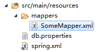
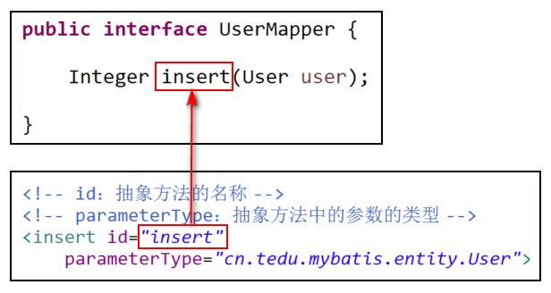
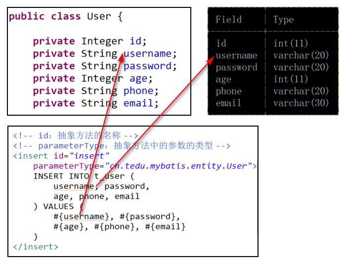
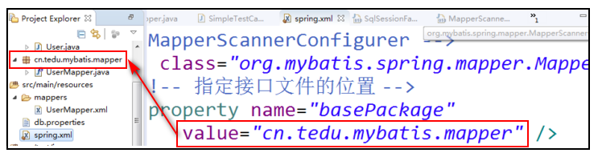

1. MyBatis
1.1. 作用
MyBatis是持久层框架，它是支持JDBC的！简化了持久层开发！
使用MyBatis时，只需要通过接口指定数据操作的抽象方法，然后配置与之关联的SQL语句，即可完成！
持久化存储：在程序运行过程中，数据都是在内存（RAM，即内存条）中的，内存中的数据不是永久存储的，例如程序可以对这些数据进行销毁，或者由于断电也会导致内存中所有数据丢失！而把数据存储到硬盘中的某个文件中，会使得这些数据永久的存储下来，常见做法是存储到数据库中，当然，也可以使用其它技术把数据存储到文本文件、XML文件等其它文件中！
1.2. 基本使用
1.2.1. 创建项目
使用此前相同的创建流程即可！注意：请检查有没有多余的配置，如果有，请删除，例如在spring.xml是否存在拦截器的配置！
此次使用MyBatis框架，所以，需要添加新的依赖：
<dependency>
<groupId>org.mybatis</groupId>
<artifactId>mybatis</artifactId>
<version>3.4.6</version>
</dependency>如果下载的依赖jar包是损坏的，应该先关闭Eclipse，然后删除对应的jar包文件，再次启动Eclipse，对项目点击右键，选择Maven > Update Project，并且在弹出的对话框中勾选
Force Update ...选项即可。
MyBatis是一个独立的框架，即只添加该依赖就可以实现持久层编程，但是，开发过程相对比较繁琐，而实际应用中，通常会与Spring、SpringMVC一起使用，整合使用时，可以简化大量的配置，使得开发更加简便！整合时，还需要添加相关依赖：
<dependency>
<groupId>org.mybatis</groupId>
<artifactId>mybatis-spring</artifactId>
<version>1.3.2</version>
</dependency>整合的SSM框架是基于JDBC的，所以，还需要添加spring-jdbc的依赖：
<dependency>
<groupId>org.springframework</groupId>
<artifactId>spring-jdbc</artifactId>
<version>3.2.8.RELEASE</version>
</dependency>添加以上依赖时，直接将此前的spring-webmvc的依赖代码复制一次，将spring-webmvc改成spring-jdbc即可！凡是Spring官方（Group ID是org.springframework）推出的以spring-作为前缀的依赖，必须使用相同的版本，否则，可能存在不兼容的风险！
在实现过程中，肯定得先建立与数据库的连接，然后再继续编程，所以，还应该添加数据源管理的依赖，即数据库连接池的依赖：
<dependency>
<groupId>commons-dbcp</groupId>
<artifactId>commons-dbcp</artifactId>
<version>1.4</version>
</dependency>由于本次将使用MySQL数据库，所以，还需要该数据库的连接驱动的依赖：
<dependency>
<groupId>mysql</groupId>
<artifactId>mysql-connector-java</artifactId>
<version>5.1.8</version>
</dependency>1.2.2. 创建数据库与数据表
创建数据库tedu_mybatis：
CREATE DATABASE tedu_mybatis;创建数据表t_user：
CREATE TABLE t_user(
id INT AUTO_INCREMENT,
username VARCHAR(20) UNIQUE NOT NULL,
password VARCHAR(20) NOT NULL,
age INT,
phone VARCHAR(20) ,
email VARCHAR(30),
PRIMARY KEY(id)
) DEFAULT CHARSET=UTF8;1.2.3. 配置数据源
在src\main\resources下创建db.properties文件，用于配置与数据库连接相关的信息：
url=jdbc:mysql://localhost:3306/tedu_mybatis?useUnicode=true&characterEncoding=utf8
driver=com.mysql.jdbc.Driver
username=root
password=root
initialSize=2
maxActive=10以上配置的值以自己使用的数据库为准！
以上配置需要被应用到项目中，则在Spring的配置中通过<util:properties />可以读取该文件：
<!-- 读取db.properties -->
<util:properties id="dbconfig"
location="classpath:db.properties" />最后，需要把这些配置应用到数据源（数据库连接池）中，当前项目使用的是Apache的commons-dbcp，则对应的数据源是BasicDataSource类：
<!-- 配置数据源 -->
<bean id="dataSource"
class="org.apache.commons.dbcp.BasicDataSource">
<property name="url"
value="#{dbconfig.url}" />
<property name="driverClassName"
value="#{dbconfig.driver}" />
<property name="username"
value="#{dbconfig.username}" />
<property name="password"
value="#{dbconfig.password}" />
<property name="initialSize"
value="#{dbconfig.initialSize}" />
<property name="maxActive"
value="#{dbconfig.maxActive}" />
</bean>完成以上配置后，可以测试到目前为止的配置是否正确，做法就是：获取BasicDataSource的对象，调用它的getConnection()方法，尝试在Java程序中获取与数据库的连接，如果能够正常连接，则配置无误，如配置有误，将无法获取连接：
@Test
public void getConnection() throws SQLException {
AbstractApplicationContext ac
= new ClassPathXmlApplicationContext(
"spring.xml");
BasicDataSource ds
= ac.getBean("dataSource", BasicDataSource.class);
Connection conn = ds.getConnection();
System.out.println(conn);
ac.close();
}1.2.4. 通过MyBatis插入数据
MyBatis的编码模式是：
- 创建接口，并声明数据访问的抽象方法；
- 配置与抽象方法对应的XML映射。
首先，创建cn.tedu.mybatis.entity.User实体类，并添加与t_user数据表匹配的属性。
在实体类中，
- 有相同数量的属性
- 数据类型应该保持一致
- 属性名称与字段名应该一一对应（在Java中的属性名称应该采用驼峰命名法，而数据库领域中并不区分大小写）
- 所有的属性都应该是私有的
- 且都存在公有的SET/GET方法
- 整个实体类应该是实现了
Serializable接口的！
通常，每张数据表都有一个与之匹配的实体类！
创建cn.tedu.mybatis.mapper.UserMapper接口，并在接口中声明抽象方法：
Integer insert(User user);在MyBatis中，执行insert/update/delete操作时，均返回受影响的行数，所以，设计抽象方法时，如果对应的是这几种操作，返回值均设计为Integer类型。
通常，一个完整的项目中，会存在许多MyBatis的映射文件，为了便于管理，会在src\main\resources下创建一个名为mappers的文件夹，然后，下载共享的SomeMapper.zip，将解压得到的XML文件复制到刚才创建的mappers文件夹中：

其实，在mappers下的映射文件的名称并不重要！但是，为了便于管理，通常会使用与接口对应的名称，所以，将SomeMapper.xml重命名为UserMapper.xml。
所有映射文件中，根节点都是<mapper>节点，且该节点必须配置名为namespace的属性，属性值是对应的Java接口，例如：
<mapper namespace="cn.tedu.mybatis.mapper.UserMapper">
</mapper>经过以上配置，指定了XML映射文件与接口文件的对应关系。
然后，在该文件内部，使用各级子节点配置与抽象方法的对应关系，子节点名称的选取，取决于要执行的操作的类型，例如要执行的数据操作是insert类型，则使用<insert>节点，这些节点都必须指定id属性，属性值是与之对应的抽象方法的方法名：
<!-- id：抽象方法的名称 -->
<insert id="insert">
</insert>在<insert>节点中，添加parameterType属性，用于指定参数的类型，即抽象方法中的参数类型：
<!-- id：抽象方法的名称 -->
<!-- parameterType：抽象方法中的参数的类型 -->
<insert id="insert"
parameterType="cn.tedu.mybatis.entity.User">
</insert>
然后，在节点内部，编写需要执行的SQL语句：
<!-- id：抽象方法的名称 -->
<!-- parameterType：抽象方法中的参数的类型 -->
<insert id="insert"
parameterType="cn.tedu.mybatis.entity.User">
INSERT INTO t_user (
username, password,
age, phone, email
) VALUES (
#{username}, #{password},
#{age}, #{phone}, #{email}
)
</insert>执行SQL语句时的参数值均使用#{}类似的语法，其中的名称是User类中的属性名：

1.2.5. 最后的配置
首先，需要配置SqlSessionFactoryBean，通过它指定数据源与XML映射的文件位置：
<!-- SqlSessionFactoryBean -->
<bean class="org.mybatis.spring.SqlSessionFactoryBean">
<!-- 指定数据源，值为以上配置的数据源 -->
<property name="dataSource"
ref="dataSource" />
<!-- 指定XML映射文件的位置 -->
<property name="mapperLocations"
value="classpath:mappers/*.xml" />
</bean>以上配置中，XML映射文件的位置使用了mappers/*.xml，即：在mappers文件夹下的所有XML文件都应该是MyBatis的映射文件，所以，后续使用时，不可以在这个文件夹中存放其它XML文件。
然后，还需要配置MapperScannerConfigurer，用于指定接口文件在哪里：
<!-- MapperScannerConfigurer -->
<bean class="org.mybatis.spring.mapper.MapperScannerConfigurer">
<!-- 指定接口文件的位置 -->
<property name="basePackage"
value="cn.tedu.mybatis.mapper" />
</bean>
至此，配置完成！
1.2.6. 执行单元测试
在src\test\java下创建测试类，并添加测试方法，以执行测试：
@Test
public void insert() {
// 加载Spring配置文件，获取Spring容器
AbstractApplicationContext ac
= new ClassPathXmlApplicationContext(
"spring.xml");
// 从Spring容器中获取对象
// bean-id与接口名一致，首字母为小写
UserMapper userMapper
= ac.getBean("userMapper", UserMapper.class);
// 测试功能
User user = new User();
user.setUsername("root");
user.setPassword("1234");
Integer rows = userMapper.insert(user);
System.out.println("rows=" + rows);
// 释放资源
ac.close();
}1.2.7. 小结
关于配置
使用MyBatis添加了一些新的依赖，及一些配置，这些属于固定的一次性操作，在后续的项目中，每个项目中只需要做1次即可。
关于这些配置，需要记住配置的作用，及可能需要修改的位置，至少包括：
- db.properties的文件名，因为
<util:properties>需要使用它； - 在db.properties中配置的值，重点是数据库名称、访问数据库的密码，在更换项目或更换计算机后都可能需要调整；
- 在配置
SqlSessionFactoryBean时指定的映射文件的位置； - 在配置
MapperScannerConfigurer时指定的接口文件所在的包；
关于开发
- 每张数据表，都应该有1个与之对应的实体类；
- 每种数据（视为每个实体类）的处理都应该有对应的接口文件，例如项目中有
User实体类，则应该有UserMapper接口； - 在接口中声明抽象方法时，如果最终将执行insert/delete/update操作，返回值类型应该是
Integer； - 每个持久层接口，都应该有对应的XML映射文件，例如有
UserMapper.java接口，就应该有UserMapper.xml文件； - 在配置XML文件内部，根据执行操作选择节点，如果执行的是insert操作，则通过
<insert>节点进行配置； - 在XML映射中，每个节点都必须配置
id属性，取值是接口中抽象方法的名称，由于id具有唯一的特性，所以，在接口中声明抽象方法时，不要使用重载； - 在配置SQL语句时，使用
#{}表示预编译时的?对应的值，括号中的名称是参数名称，或参数对象中的属性名称； - 当执行delete/update时，配置的节点不需要指定
parameterType属性。
1.2.8. 删除指定的数据
设置目标为根据id删除指定的数据。
先在接口中声明抽象方法：
Integer deleteUserById(Integer id);然后，在XML映射中配置以上方法对应的节点：
<delete id="deleteUserById">
DELETE FROM t_user WHERE id=#{id}
</delete>然后，执行单元测试：
@Test
public void deleteUserById() {
// 加载Spring配置文件，获取Spring容器
AbstractApplicationContext ac
= new ClassPathXmlApplicationContext(
"spring.xml");
// 从Spring容器中获取对象
// bean-id与接口名一致，首字母为小写
UserMapper userMapper
= ac.getBean("userMapper", UserMapper.class);
// 测试功能
Integer id = 3;
Integer rows = userMapper.deleteUserById(id);
System.out.println("rows=" + rows);
// 释放资源
ac.close();
}——————————-
作业
- 完成根据用户名删除数据的功能；
- 完成将所有用户的密码设置为某个值的功能；
- 完成删除用户表中所有数据的功能。
在MyBatis中，默认不允许添加2个参数，否则会报错，解决方案待续。